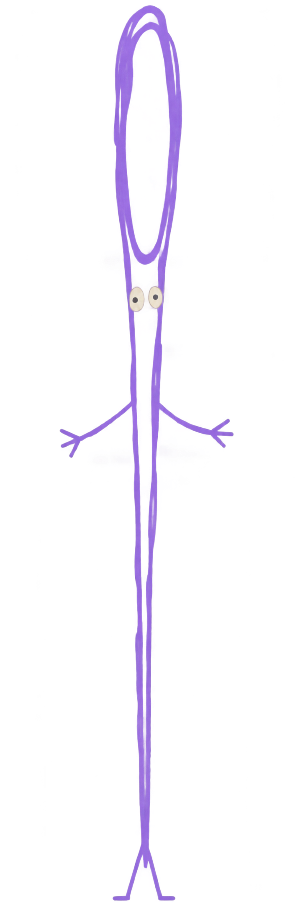

최애는 한 명인데,
앨범은 왜 여러 장을 살까
팬심과 구매 사이, 포토카드의 가격을 만드는 규칙을 살펴봤습니다.
32.8%5장 사고도 최애가 없을 확률
5명·동일 확률·독립 추첨을 가정한 계산
국립순천대학교 패션디자인학전공
왜 하필 그걸 샀을까?
한정판은 사두면 오를까?
같은 앨범은 왜 여러 장 살까?
논문에서 수업까지, 하나의 질문이 이어지는 곳.
팬심과 구매 사이, 포토카드의 가격을 만드는 규칙을 살펴봤습니다.
32.8%5장 사고도 최애가 없을 확률
5명·동일 확률·독립 추첨을 가정한 계산
스몰 브랜드를 위한 멀티모달 가치 추론과 공정 추천 시스템.
리테일, 소비자 심리, 트렌드.
데이터와 사례로 함께 배웁니다.
모리랑 한 문제 풀어볼까요?

아이돌 콘셉트와 스타일을 정하고, 100만 원으로 상품을 골라 보세요.